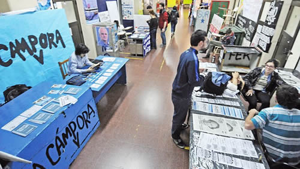

Real Chubut - Agencia de Noticias


El auge de la Ciencia Política se expande fuera del aula

La carrera que nació en democracia pasó de 8 mil a 18 mil graduados en una década. El boom de los politólogos en el Gobierno y en los principales partidos de la oposición. Entre la gestión y la academia.
La ciencia política es la ciencia social que se ocupa de estudiar los fenómenos sociales relacionados con el ejercicio del poder político. Utilizando diversas teorías y métodos de observación, interpreta y explica comportamientos de actores políticos (por ejemplo, gobernantes, partidos, movimientos sociales, burocracias, votantes), sociales (sectores sociales diferenciados, clases sociales), económicos (grupos económicos), y sus interrelaciones con el poder, tanto en el plano doméstico como en el internacional (por razones de simplicidad expositiva, incluyo a las relaciones internacionales como parte integrante de la ciencia política). Aunque sus raíces podrían remontarse hasta Platón y Aristóteles, la ciencia política reconoce a Nicolás Maquiavelo como uno de sus más sobresalientes padres fundadores, porque el florentino fue el primero en sostener que la política es un ámbito que tiene sus propias reglas de funcionamiento, y que antes que aprobarlas o condenarlas moralmente (o por algún otro criterio) es imperioso conocerlas y entenderlas en su propia lógica. Con esa impronta, y al ritmo de los avances de la ciencia moderna, la ciencia política se desarrolló enormemente durante el siglo XX y particularmente después de la Segunda Guerra Mundial, convirtiéndose en una de las disciplinas que, junto a la economía, más aportó al conocimiento del comportamiento social más allá de las fronteras históricas y/o culturales que lo moldean. Desarrollo país. En la Argentina, este desarrollo excepcional comienza a partir de 1983. La estabilidad del régimen democrático y sus libertades dieron la posibilidad de un desarrollo disciplinar nunca antes experimentado, posibilitando al mismo tiempo, y de manera paulatina, un proceso de institucionalización muy significativo a partir de inicios de los años 90. En un proceso análogo a los de otros países de la región, este desarrollo se evidenció no solo en la creación de carreras y posgrados de ciencia política y/o relaciones internacionales (y denominaciones afines) sino también en la organización regular de congresos, la difusión de la investigación, el aumento de las publicaciones especializadas y la creciente inserción profesional de los colegas en diversos ámbitos de actividad, públicos, privados y del tercer sector. Así, la ciencia política se expandió hacia afuera de las aulas. Si hace treinta años las ocupaciones de los/as politólogos/as eran casi exclusivamente la docencia y la investigación universitarias, hoy en día se expandieron los ámbitos de su desarrollo profesional hacia la asesoría en poderes ejecutivos y legislativos en los tres niveles de gobierno (nacional, provincial y municipal), la administración pública, la gestión de organizaciones no gubernamentales, la investigación de la opinión pública, la docencia en la educación media, y hasta el trabajo en oficinas de relaciones institucionales de grandes empresas (que diseñan la “política” empresarial respecto de los poderes públicos). En otras palabras, lo/as politólogos/as se desarrollan y destacan en múltiples instancias de comprensión y explicación de relaciones de poder (incluyendo los dispositivos institucionales y/o idiosincrásicos que les dan forma).Mientras según datos oficiales hay alrededor de 18 mil politólogos/as graduados en el país (hace diez años éramos unos 8 mil, y hace veinte, 2.500), solo alrededor de 150 son investigadores del Conicet. Expansión de la disciplina. Esta creciente valoración del saber politológico como ingrediente útil para la toma de decisiones complejas se evidencia también en los acercamientos de la propia política a los círculos de vanguardia de la disciplina. Por caso, el último Congreso Nacional de Ciencia Política organizado en 2017 por la Sociedad Argentina de Análisis Político (SAAP, la asociación que nuclea a los politólogos a nivel nacional) contó con la presencia de Gabriela Michetti, Horacio Rodríguez Larreta, Juan Manuel Abal Medina, Rodolfo Urtubey, Carla Carrizo, Martín Lousteau, Claudio Lozano, Daniel Arroyo, Eduardo Amadeo, Lilia Puig de Stubrin, Fernando Straface, Sebastián Galmarini, y analistas y formadores de opinión como Jorge Fontevecchia, María O’Donnell, Juan Pablo Varsky, Eduardo Fidanza, Rodrigo Lloret, Sergio Berensztein, Graciela Römer y Marita Carballo, entre otros. Muchos de ellos, a su vez, son politólogos. Indiscutidamente, la existencia de una asociación legítima es un factor fundamental para el desarrollo de una disciplina y una profesión. En el caso de la ciencia política argentina, la SAAP cumple un papel protagónico en el fuerte proceso de institucionalización y expansión que vive la disciplina. Sus múltiples actividades académicas (jornadas, publicaciones, becas) y fundamentalmente, los congresos nacionales de ciencia política, han significado un impulso para la actividad y para la necesaria integración de sus diversos actores e instituciones. Recientemente, su Escuela de Capacitación y Formación Profesional busca perfeccionar también sus variados entornos laborales. En definitiva, la ciencia política está cambiando su relación con la sociedad, lo que se evidencia en la demanda de consultas, en el interés de otros sectores sociales en ella, en las expectativas de los ingresantes y cursantes, y en las experiencias de los graduados más recientes. De allí que las vinculaciones con el mercado de trabajo o con la actividad política emergen como tópicos complejos que constituirán los mayores desafíos hacia adelante. En esa línea, y dado que la mencionada institucionalización de la disciplina se ha dado sin mayor planificación de la educación superior por parte del Estado, resulta vital que la propia disciplina tenga una visión amplia de sí misma. En estos últimos años, la ciencia política ha dejado de vivir dentro de la torre de marfil de la academia para transformarse en una profesión reconocida y capaz de resolver problemas complejos en diferentes ámbitos. Capacitación permanente La SAAP acaba de lanzar su Escuela de Capacitación y Formación Profesional, un espacio destinado a ofrecer cursos que brinden conocimientos y herramientas tanto para el politólogo/a como para la actualización académica. Dictados por profesionales destacados, tienen el objetivo de contribuir a la difusión y al mejoramiento de la profesión. El espacio está pensado, aunque no exclusivamente, para todos/as aquellos/as politólogos/as que están ejerciendo la profesión fuera de los ámbitos académicos, interesados/as en adquirir herramientas de gestión profesional o en volver a algunos tópicos específicos del conocimiento politológico. Más información en: www.saap.org.ar. *Politólogo. Presidente de la Sociedad Argentina de Análisis Político (SAAP).
Fuente: Perfil